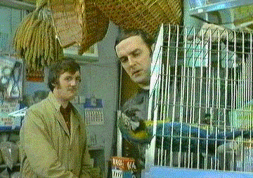

P 2: parrot04.jpg
P 2: parrot04.jpg
Created: 06/05/99 09:18:26. Modified: 06/05/99 15:17:36.
File name: parrot.txt (media type: text)
17 quotations
Codes (17): Bereft of life, ceased to be, dead, deceased, demised, gone to meet 'is maker, improbability, irreplacability, is no more, non-sequitur, Norwegian Blues stun easily, pining for the fjords, resting, rests in peace, slug, stone dead, stunned
Memos (0):
Document body:
P 2: parrot04.jpg
File name: parrot04.jpg (media type: graphic)
0 quotations
Codes (0):
Memos (0):
Document body:

P 4: norway.bmp
File name: norway.bmp (media type: graphic)
1 quotations
Codes (2): breeding site, pining for the fjords
Memos (0):
Document body:
P 5: parrot04.bmp
File name: parrot04.bmp (media type: graphic)
1 quotations
Codes (1): stunned
Memos (0):
Document body:
All codes used: Bereft of life {1-2} , breeding site {1-0}, ceased to be {1-2}, conflict {0-1}, dead {1-3}, Dead Parrot {0-2}, deceased {1-2}, demised {1-7}, gone to meet 'is maker {1-3}, Humour Types {0-4}, improbability {1-1}, irreplacability {1-2}, is no more {1-3}, non-sequitur {1-1}, Norwegian Blues stun easily {1-1}, pining for the fjords {2-2}, resting {1-2}, rests in peace {1-3}, slug {1-1}, stone dead {1-2}, stunned {2-2}
 death
deathCodes(9): Bereft of life , ceased to be, dead, deceased, demised, gone to meet 'is maker, is no more, rests in peace, stone dead
 death
deathNodes (9): CO:stone dead {1-2} , CO:Bereft of life {1-2}, CO:ceased to be {1-2}, CO:dead {1-3}, CO:deceased {1-2}, CO:demised {1-7}, CO:gone to meet 'is maker {1-3}, CO:is no more {1-3}, CO:rests in peace {1-3}
Focussed Network on: 4:1Nodes (3): CO:pining for the fjords {2-2} , CO:breeding site {1-0}, QU:~ 4:1 norway.bmp (336:371)
Focussed Network on: 5:1Nodes (2): CO:stunned {2-2} , QU:5:1 parrot04.bmp (5:192)
Focussed Network on: pining for the fjordsNodes (5): CO:pining for the fjords {2-2} , CO:stunned {2-2}, CO:resting {1-2}, QU:~ 4:1 norway.bmp (336:371), QU:5:1 parrot04.bmp (5:192)
parrotNodes (21): CO:conflict {0-1} , CO:Bereft of life {1-2}, CO:ceased to be {1-2}, CO:dead {1-3}, CO:deceased {1-2}, CO:demised {1-7}, CO:gone to meet 'is maker {1-3}, CO:improbability {1-1}, CO:irreplacability {1-2}, CO:is no more {1-3}, CO:non-sequitur {1-1}, CO:Norwegian Blues stun easily {1-1}, CO:pining for the fjords {2-2}, CO:resting {1-2}, CO:rests in peace {1-3}, CO:slug {1-1}, CO:stone dead {1-2}, CO:stunned {2-2}, CO:Dead Parrot {0-2}, CO:Humour Types {0-4}, QU:1:1 C: 'Ello, Miss? Owner: What do.. (9:11)